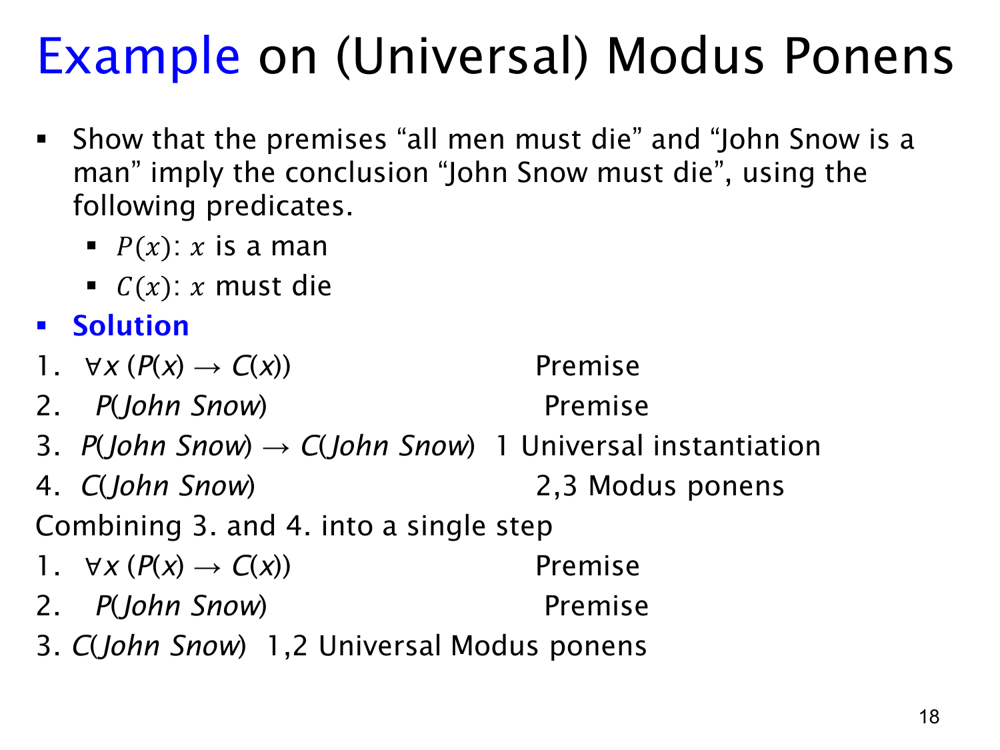

L1.3 · 第 18 页讲解原文
查看这一页课件

全称肯定前件的实例：John Snow
本页用一个具体人物示范上一页的组合规则。定义 P(x) 为“x 是男人”，C(x) 为“x 必须死亡”。给定两项前提：“所有男人都必须死亡”和“John Snow 是男人”，形式化为
∀x(P(x)→C(x)),P(John Snow).
先对全称前提使用全称实例化，把变量 x 代为 John Snow，得到
P(John Snow)→C(John Snow).
再与已知的 P(John Snow) 一起使用命题逻辑的肯定前件（modus ponens），推出 C(John Snow)，即“John Snow 必须死亡”。这正是课件四行证明中第 3、4 行的作用。
课件也给出压缩写法：把“实例化 + 肯定前件”合并称为全称肯定前件（universal modus ponens），从两条前提直接记出 C(John Snow)。压缩并没有省去逻辑依据；中间的具体条件句仍隐含在规则里。
关键是让两条前提谈论同一个对象。不能从“所有男人都必须死亡”和“John Snow 是男人”去推出另一个特定人的结论，除非另有前提说明那个人也满足 P。